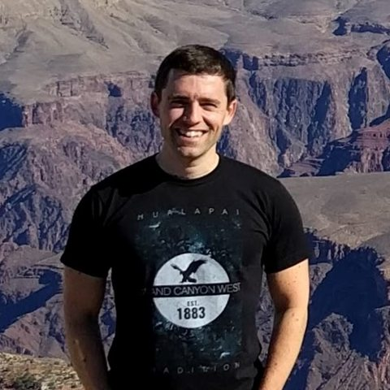

Mathematics · University of Connecticut
Álvaro Lozano-Robledo
I am a Professor of Mathematics at the University of Connecticut. I work in number theory, in arithmetic geometry: elliptic curves, their torsion subgroups, and their Galois representations.
I wrote Elliptic Curves, Modular Forms, and Their L-functions (AMS Student Mathematical Library, 2011) and Number Theory and Geometry: An Introduction to Arithmetic Geometry (AMS, 2019). I co-organize CTNT, the Connecticut Summer School in Number Theory, and I serve on the editorial board of The Ramanujan Journal.
I also make free mathematics for everyone as MathAndCobb, from Algebra for Kids up to graduate courses on elliptic curves. More recently I have been building interactive apps that let you explore the mathematics directly.

Articles & videos
Articles
All my research articles in one place, as up-to-date PDFs with abstracts, searchable and linked to arXiv.
alozanoroble.github.io/articles → OutreachMathAndCobb
My latest videos and posts from YouTube, TikTok, Instagram, Facebook, Bluesky and X, all on one page.
alozanoroble.github.io/mathandcobb →Apps
Interactive mathematics I am developing. Each one is open source on GitHub.
-
The Riemann Hypothesis
RH and its generalizations: ERH for Dedekind zeta functions, GRH for Dirichlet L-functions, and the Grand Riemann Hypothesis, each with its zeros and live plots of the critical strip.
-
Rational Points
Add and multiply rational points on an elliptic curve y² = x³ + ax + b, with exact fraction arithmetic and a live secant and tangent construction.
-
EC Problem Explorer
Elliptic curve practice problems by topic, with hints and solutions held back until you have tried the problem.
-
Gödel's God
Gödel's ontological argument and its emendations, formalized and machine-checked in Lean 4, with an explorer for the proof.
Course materials: MATH 5020, Elliptic Curves, with notes, homework and video lectures.
Elsewhere
- UConn homepage
- arXiv
- Google Scholar
- GitHub
- YouTube
- A Field Guide to Mathematics (blog)
- All MathAndCobb links
Department of Mathematics, University of Connecticut, 341 Mansfield Road U1009, Storrs, CT 06269-1009 · alvaro.lozano-robledo@uconn.edu